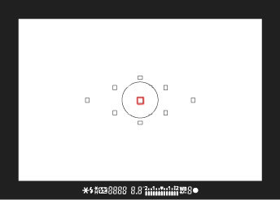
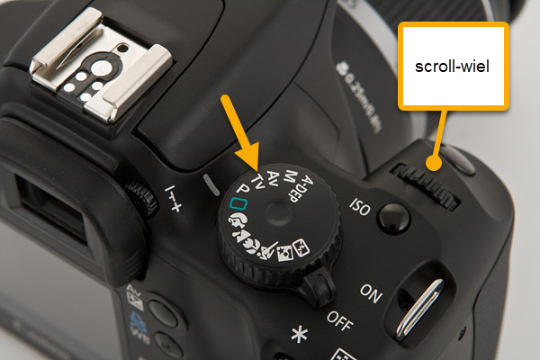

Tips en trucs over fotografie
Door: Dick van Braak
Laatste update: 25-8-2025
Inleiding
Er is op internet heel veel informatie te vinden over fotografie. Ook fotografie van vogels. In dit artikel wil ik beknopt de belangrijkste zaken op een rijtje zetten zodat je met deze informatie in ieder gavel erop uit kunt. Weet echter dat het maar een kleine basis betreft!
Zelf vind ik het kennen van je materiaal belangrijk. Je kan nog zoveel vogels zien, maar als je niet weet hoe je camera werkt, heb je niets aan je (dure) camera. Omdat er zoveel verschillende merken zijn met even zoveel verschillende mogelijkheden houden we het algemeen. We zullen daar dus eerst mee beginnen. Daarnaast nog een aantal punten over speciaal vogelfotografie.
Overzicht
- Begin eenvoudig
- Fotografeer uit de hand
- Hoe krijg je een vliegende vogel snel in je zoekerbeeld?
- De basisinstellingen
- Conclusie
- Meer informatie
Begin eenvoudig
Als je net begint met fotograferen van vogels, moet je op veel zaken letten.
- Begin eenvoudig en gebruik in eerste instantie de automatische instellingen van je camera.
- Oefen eerst met vogels die rustig blijven zitten. Vogels kunnen vliegen en dat geeft extra uitdaging (en ook mooie foto's!).
- Begin met grote vogels. Kies voor een zwaan of reiger bijvoorbeeld.
- Gebruik in eerste instantie een statief, als je die hebt.
- Zet de stabilisatie van lens of camera aan.
- Neem je handleiding eens door en kijk wat er allemaal mogelijk is.
Zelf zorg ik voor 1 scherpstelpunt, zodat je specifiek op 1 punt kan scherpstellen.  Bekijk eens in je handleiding de mogelijkheid van je AF-mode (AF=auto focus). Wil je bij het indrukken van de sluiter 1 foto maken, of wil je er meer? Wil je dat de focus op het onderwerp blijft of juist niet? Zeker bij het fotograferen van vogels is het wel handig dat de camera de focus houdt op het bewegend onderwerp. Zeker als je een vliegende vogel gaat fotograferen. Probeer eens uit en ken je camera!
Fotografeer uit de hand
Ja, dit conflicteert met een vorige opmerking om juist een statief te gebruiken. Echter, vogels zitten niet stil en dan is een statief niet handig. Oefen hier eens mee.  Je zult merken dat de automatische instelling nu helemaan niet handig is. Je hebt een hogere sluitertijd nodig. Probeer een sluitertijd van 1/1000sec of hoger. Op mijn Canon zit hiervoor een stand 'Tv' (Time value), waarbij je alles automatisch kan zetten, behalve de sluitertijd. Deze kan je dan snel wijzigen m.b.v. een wieltje.
Hoe krijg je een vliegende vogel snel in je zoekerbeeld?
In het begin is het best lastig om de vogel die je wilt fotograferen in één keer in je zoekerbeeld te krijgen. Wat is de truc? Je kijkt over je lens naar de vogel en je blijft naar de vogel kijken terwijl je je camera tussen jou en de vogel plaatst en voilà: je hebt de vogel gelijk in beeld. Natuurlijk vergt dit wat oefening, maar het is dé manier. Een andere tip als je een zoomlens hebt: probeer met minder millimeter (bijvoorbeeld 100mm) de vogel in beeld te krijgen. Zoom daarna pas verder in.
Bij vliegende vogels is het uiteraard veel lastiger. oefen ook hier met grotere vogels zoals de Blauwe reiger. Probeer met hogere sluitertijden te werken. Belangrijk om op te merken is wel dat hoe hoger je sluitertijd, hoe meer licht er nodig is. Is het wat somber weer, dan zal je bij een sluitertijd van 1/1500 donkere foto's krijgen. Dit hangt ook weer af van je ISO-waarde. Laat deze vooralsnog eens op automatisch staan. Bekijk later de foto's eens terug en kijk welke sluitertijd/ISO-waarde er gebruikt is. Bij meer ervaring kan je ook de ISO-waarde zelf in gaan stellen. Zie ook eens de volgende website: ISO, diafragme en sluitertijd.
Conclusie
Met bovenstaande informatie hoop ik dat het volgende duidelijk is geworden:
- Ga oefenen
- Begin met eenvoudige objecten
- Bekijk je foto's en vergelijk de kwaliteit en instellingen
- Maak je de terminologie van het fotograferen eigen
- Bouw stap voor stap verder
- Koop eens een natuurfotografie blad en doe inspiratie op
Meer informatie
Zoals aangegeven is er op internet veel informatie te vinden. Een aantal verwijzigingen hebben we al gegeven. Hier nog e.e.a. op een rijtje: